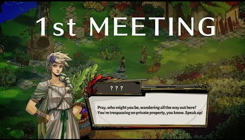

O enredo de "Hades" é fortemente inspirado na mitologia grega. O jogador assume o papel de Zagreus, o filho de Hades, o deus do submundo. Zagreus está determinado a escapar do reino de seu pai para descobrir mais sobre sua verdadeira origem e encontrar sua mãe, Perséfone. Ao longo do jogo, Zagreus enfrenta uma série de desafios e inimigos enquanto tenta escapar repetidamente do submundo.
Zagreus, o protagonista, é o Príncipe do Submundo. Ele cresce insatisfeito e questionador, sentindo-se deslocado no reino de Hades. Sua jornada começa quando ele descobre que sua mãe biológica é Perséfone, que deixou o Submundo sob circunstâncias misteriosas. Decidido a encontrá-la e aprender mais sobre suas origens, Zagreus tenta escapar do Submundo, desafiando a vontade de seu pai.
Cada tentativa de fuga de Zagreus representa uma oportunidade de aprender mais sobre seu passado e desenvolver suas habilidades. A narrativa avança mesmo após múltiplas mortes, com diálogos dinâmicos que refletem as ações do jogador e suas interações com outros personagens.
1-Primeira Tentativa de Fuga: Zagreus faz sua primeira tentativa de escapar do Submundo, enfrentando inimigos e obstáculos em seu caminho. Ele recebe ajuda dos deuses do Olimpo, que enviam presentes e bênçãos para fortalecer suas habilidades.
2-Revelações e Descobertas: Conforme Zagreus avança, ele descobre mais sobre a verdade de sua mãe e seu relacionamento com Hades. Ele aprende que Perséfone deixou o Submundo por causa de um acordo entre os deuses, e sua partida foi mantida em segredo.
3-Confrontos com Hades: Em várias ocasiões, Zagreus enfrenta Hades em batalhas intensas. Esses confrontos não são apenas físicos, mas também carregados de tensão emocional e narrativa, revelando as motivações e emoções de ambos.
4-Perséfone Encontrada: Eventualmente, Zagreus consegue escapar e encontra Perséfone. A reunião é emocional, e Perséfone revela que deixou o Submundo para proteger Zagreus. Ela explica as complexidades do acordo entre os deuses e sua esperança de que Zagreus pudesse ter uma vida melhor.
